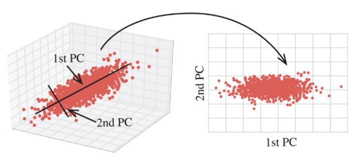

① Input data의 공분산 행렬 계산 변수들 간의 상관관계 (= 상관계수)
② 공분산 행렬의 고유 값과 고유벡터 계산 상관관계의 특성을 나타내는 최소 단위
상관관계 정도의 크기 계산
③ 고유 값의 크기 순서대로 고유벡터를 나열 큰 상관관계를 나타내는 변수 특성 나열
④ 정렬된 고유벡터 가운데 일부 선택 고유벡터 확인하고 고유 값의 크기에 따라 행 단위로 선택 (P-value)
(-1 <= p-value <= 1)
⑤ 해당 고유 벡터와 Input data 내적 Input data를 고유 벡터에 정사영 (주성분 추출)
행의 개수가 감소했으므로 variables의 수 감소
(차원 축소)